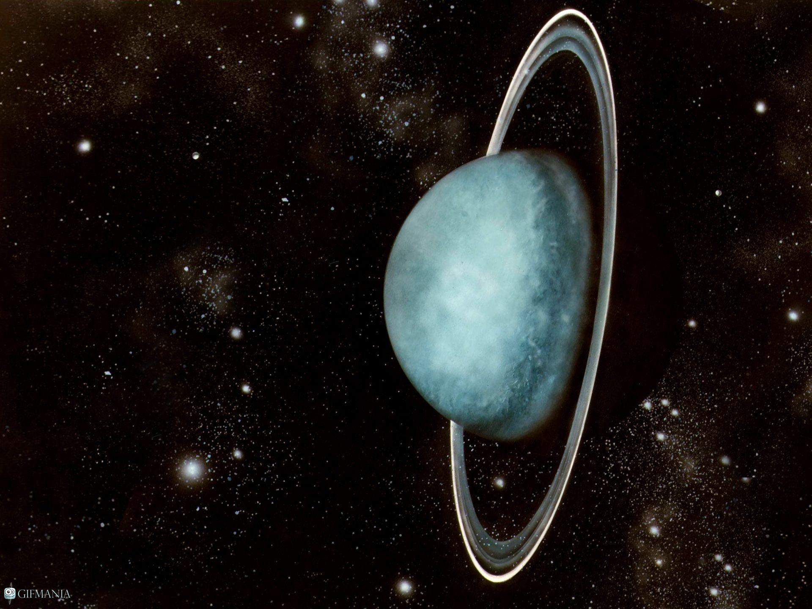

Überblick über den Planeten Uranus
Uranus, benannt nach dem griechischen Himmelsgott, wurde 1781 von Sir William Herschel entdeckt und ist der siebte Planet unseres Sonnensystems. Als Gasriese zeichnet er sich durch seine eisigen Atmosphäre und seine ungewöhnliche Achsneigung aus, die ihn auf eine einzigartige Weise um die Sonne rotieren lässt. Unser Team von Novus Space Exploration widmet sich der Erforschung dieses faszinierenden Himmelskörpers, um seine Geheimnisse zu entschlüsseln und neue Erkenntnisse über die Entstehung und Entwicklung von Planeten zu gewinnen.
Missionen zu Uranus
Erfahren Sie mehr über unsere wegweisenden Missionen, die speziell entwickelt wurden, um den Planeten Uranus genauer zu erforschen. Von der Entsendung von Raumsonden bis hin zu fortschrittlichen Teleskopbeobachtungen haben wir bedeutende Schritte unternommen, um das Verständnis für Uranus und seine einzigartigen Eigenschaften zu vertiefen.
Die Atmosphäre von Uranus
Uranus' Atmosphäre besteht hauptsächlich aus Wasserstoff und Helium, mit Spuren von Methan und Ammoniak. Erkunden Sie mit uns die faszinierende Chemie und Dynamik dieser Gashülle und erfahren Sie, wie sie sich von anderen Gasriesen in unserem Sonnensystem unterscheidet.
Ringsystem und Monde
Uranus verfügt über ein komplexes Ringsystem und eine Vielzahl von Monden. Entdecken Sie die neuesten Erkenntnisse über diese Begleiter und erfahren Sie, wie sie zu unserem Verständnis der Planetenbildung beitragen.
Zukunftsaussichten
Erfahren Sie mehr über die zukünftigen Pläne von Novus Space Exploration für die Erforschung von Uranus. Wir setzen uns dafür ein, die Rätsel dieses fernen Gasriesen weiter zu entschlüsseln und die Menschheit in ihrer Reise durch das Sonnensystem voranzubringen. Bleiben Sie auf dem Laufenden, um die neuesten Updates und bahnbrechenden Entdeckungen im Zusammenhang mit Uranus von Novus Space Exploration zu erhalten. Vielen Dank für Ihr Interesse an unserer Mission, die Grenzen des Wissens zu erweitern und die Geheimnisse des Universums zu enthüllen.
Begleiten Sie uns auf unserer Reise zu den Sternen und entdecken Sie mit Novus Space Exploration die faszinierende Welt von Uranus!